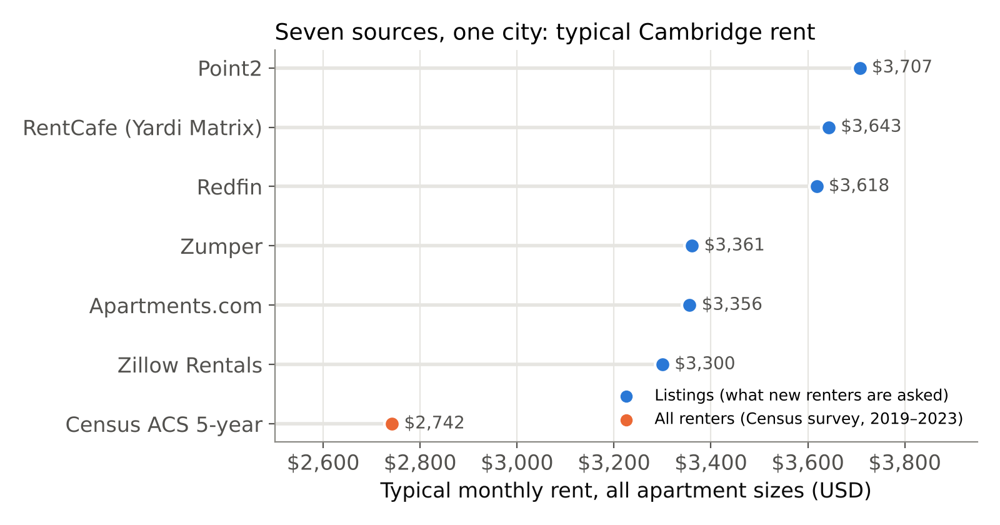
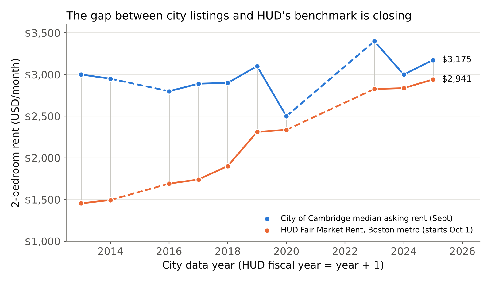

Finding 1
Seven sources, one city, almost $1,000 apart
Six listing sites put typical Cambridge rent between $3,300 and $3,707 a month. The Census figure, $2,742, is lower because it counts every renter household, including people who signed their leases years ago.

Who is counted
Listings show what new renters are asked. The Census counts everyone, including long-time tenants.
Average vs. median
A few luxury units pull averages up, so averages run higher than medians.
Which listings
The city uses market-rate listings only and leaves out affordable and university graduate housing.
Where and when
HUD covers the whole Boston metro. Dates range from a 2019–2023 average to spring 2026.
Finding 2: city listings vs. HUD's benchmark
For 2-bedrooms, the city's median asking rent was above HUD's Fair Market Rent in all 10 paired years, by $818 on average (paired t = 4.99, df = 9, p = 0.0008). But HUD's metro figure doubled (+102%) while the city's rose 6%, so the gap shrank from $1,546 in 2013 to $234 in 2025.
